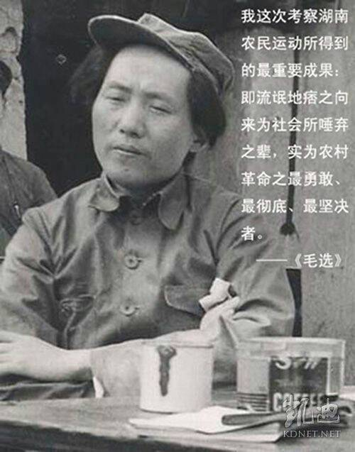
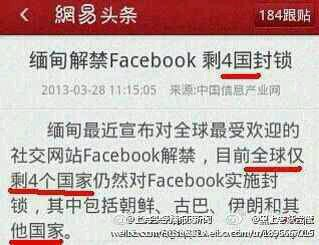
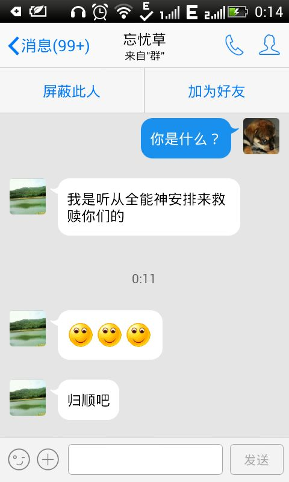

Conversation with 81184027 at Wed 13 Aug 2014 10:51:37 AM CST on 154115835 (webqq)
(10:45:39 AM) 福建-福州&水浒: 有钱，不差钱了
(10:46:30 AM) 醒悟: 吃饱没事超花费啊:D
(10:46:55 AM) 醒悟: 然后一屁果债
(10:47:11 AM) 紫罗兰: 有次开卡存十万就可以领一罐花生油，借钱存了就取出来下一个继续上
(10:48:05 AM) 醒悟: :D真牛
(10:48:15 AM) 紫罗兰: :D
(10:48:39 AM) 蛋包飯: 不是雨季，也没有台风，福建各地却迎来了强降雨，局部地区还遭遇特大暴雨，未来七天我省维持强降水
(10:48:42 AM) 上善若水: 我两张卡每月都刷几千
(10:48:47 AM) 上善若水: 信用卡
(10:48:53 AM) 上善若水: 但都准时还上
(10:49:03 AM) 紫罗兰: 我某有信用卡
(10:49:45 AM) 醒悟: 我从不用那东西
(10:49:57 AM) 福建-福州&水浒: 不用那玩意
(10:50:10 AM) 福建-福州&水浒: 借的要还的
(10:51:12 AM) 醒悟: 就是有钱多花花没钱少花花，我不喜欢花天酒地的人
(10:51:31 AM) 上善若水: 与时代接轨
(10:52:03 AM) 醒悟: 我比较喜欢节约的人
(10:54:03 AM) 蛋包飯: 比较节约的人很少了！
(10:54:16 AM) 醒悟: 我从不借钱从我18岁开始到我叔公开的公司工作只有别人借我钱我从不借别人钱，没钱就省着花
(10:54:19 AM) 蛋包飯: 这年头，像我这样节约的人是被房价逼的
(10:54:36 AM) 福建-福州&水浒: :D:$
(10:54:36 AM) 福建-福州&水浒: (#195264):D:$
(10:45:39 AM) 福建-福州&水浒: 有钱，不差钱了
(10:46:30 AM) 醒悟: 吃饱没事超花费啊:D
(10:46:55 AM) 醒悟: 然后一屁果债
(10:47:11 AM) 紫罗兰: 有次开卡存十万就可以领一罐花生油，借钱存了就取出来下一个继续上
(10:48:05 AM) 醒悟: :D真牛
(10:48:15 AM) 紫罗兰: :D
(10:48:39 AM) 蛋包飯: 不是雨季，也没有台风，福建各地却迎来了强降雨，局部地区还遭遇特大暴雨，未来七天我省维持强降水
(10:48:42 AM) 上善若水: 我两张卡每月都刷几千
(10:48:47 AM) 上善若水: 信用卡
(10:48:53 AM) 上善若水: 但都准时还上
(10:49:03 AM) 紫罗兰: 我某有信用卡
(10:49:45 AM) 醒悟: 我从不用那东西
(10:49:57 AM) 福建-福州&水浒: 不用那玩意
(10:50:10 AM) 福建-福州&水浒: 借的要还的
(10:51:12 AM) 醒悟: 就是有钱多花花没钱少花花，我不喜欢花天酒地的人
(10:51:31 AM) 上善若水: 与时代接轨
(10:52:03 AM) 醒悟: 我比较喜欢节约的人
(10:54:03 AM) 蛋包飯: 比较节约的人很少了！
(10:54:16 AM) 醒悟: 我从不借钱从我18岁开始到我叔公开的公司工作只有别人借我钱我从不借别人钱，没钱就省着花
(10:54:19 AM) 蛋包飯: 这年头，像我这样节约的人是被房价逼的
(10:54:36 AM) 福建-福州&水浒: :D:$
(10:54:36 AM) 福建-福州&水浒: (#195264):D:$
(10:54:47 AM) 蛋包飯: 主要是我不想跟父母住一起
(10:54:55 AM) 蛋包飯: 硬着头皮买房的。
(10:54:55 AM) 醒悟: 27岁自己创业
(10:55:38 AM) 福建-福州&水浒: 
(10:55:51 AM) 福建-福州&水浒: 像不像流氓头子
(10:55:57 AM) 上善若水: 我只借银行钱，然后他们都借我现金走
(10:55:57 AM) 福建-福州&水浒: :D:D:D:D
(10:56:07 AM) 蛋包飯: 我也是向银行借钱
(10:56:10 AM) 上善若水: 去年一同学借走我一万，打水漂了
(10:56:11 AM) 醒悟: 我小时候穷，所以养成习惯啦，我前妻花钱大手大脚的
(10:56:13 AM) 蛋包飯: 借金
(10:56:22 AM) 上善若水: 后来他们都告诉我那钱别想拿回来了
(10:57:09 AM) 上善若水: 周啸天诗歌节选
《邓稼先》
炎黄子孙奔八亿，不蒸馒头争口气。
罗布泊中放炮仗，要陪美苏玩博戏。
《超级女声》
今宵荧幕富星光，五省共追超女狂。
歌曲一朝惊屈贾，粉丝十万下江湘。
(10:57:31 AM) 上善若水: 这特么的鲁迅文学奖的作品？
(10:57:53 AM) 上善若水: 这就是打油诗嘛
(10:58:26 AM) 上善若水: 现任四川大学文学与新闻学院教授的周啸天，成为第一个以传统诗词获奖者。其获奖作品《将进茶》一诗开头写到：“世事总无常，吾人须识趣。空持烦与恼，不如吃茶去。”王蒙认为它“亦属绝唱，已属绝伦”。
(11:07:28 AM) 湖北-黄冈&雷神: :B
(11:08:14 AM) 光:
记者来鸿：在美国做无神论者的耻辱
阿利姆·马克布勒（Aleem Maqbool） BBC记者
发自美国俄亥俄哥伦布
更新时间 2014年8月12日, 格林尼治标准时间11:31
Facebook
Twitter
Google+
转寄朋友
打印文稿
atheist
一些无神论者呼吁其他无神论者“站出来”
美国的无神论者日前聚集在俄亥俄州首府城市哥伦布，参加美国第一个无神论电视台开播庆祝活动，并且对坚持无神论信仰的人表示支持。
美国“无神论者协会”主席戴维·西尔弗曼在“无神论电视台”开播仪式上发表讲话说，尽管有些话不受欢迎，但是必须说出来；尽管有些抗争不受欢迎，但是必须去做。
他说，对于那些隐藏着的无神论者来说，“你并不孤单，你理应得到平等的对待。”
美国黑人无神论者协会成员马克·哈彻随后发表讲话，呼吁无神论者站出来，公开自己的信仰。
他说，他生来所做的最好的决定之一就是彻底地倡导人们“站出来”，公开自己的无神论信仰。
但是，“站出来”公开承认自己是无神论者，这对美国的许多人来说显然是非常困难的事情。
BBC记者在俄亥俄州哥伦布市参加一次大型无神论学生集会时了解到，许多学生并不愿意接受记者的采访。
atheist
无神论学生在俄亥俄州哥伦布市举行了集会
“非宗教学生联盟”成员雅米拉·贝对记者说，学生脖子上的短绳标记显示他们愿意不愿意接受记者采访，红色短绳的意思就是他不愿意和你交谈。
她说，许多无神论学生还没有公开自己的立场，他们的父母可能并不知道他们是无神论者，也不知道他们正在质疑自己的宗教。
她说，许多人担心如果公开宣称自己不信仰上帝，可能会遭到抛弃，甚至遭到暴力对待。
拉桑·丹吉-班古拉
拉桑·丹吉-班古拉是所在大学无神论学生团体的负责人，现年22岁，表示愿意和记者交谈。
他在对记者回忆告诉母亲自己是无神论者的情景时发出了悲伤的叹息声，“开始的情况当然是糟糕透了，她非常气愤。”
“我认为她后来接受了这个事实，但是我们避免谈论这件事情，她好像没有准备把我赶出家门。”
但是他对记者说，他并没有把这件事情告诉父亲，因为他不想毁掉他们之间的关系。
丹吉-班古拉说，这样的事例太多了，有人被赶出家门，有人被送进强制信仰宗教的圣经学习营。
“我不想就这样失去我的父亲。”
凯特林·坎贝尔
19岁的凯特林·坎贝尔来自西弗吉尼亚州，父母并不反对她的无神论立场，但糟糕的是她难以应对自己的社会环境。
她说，“在高中，当我走过门厅走廊的时候，周围往往一片寂静，甚至有人朝我吐口水。”
美国皮尤研究中心不久前进行的一项民意调查显示，美国人宁愿让一位70岁以上的老人、或公开承认自己是同性恋的人、或从来没有担任过任何公职的人出任美国总统，也不愿意让一位无神论者担任这个职务。
皮尤研究中心先前一项民意调查得到的结果更加令人惊讶，美国的受访者认为无神论者比强奸犯更不值得信任。
atheist
这条无神论宣传标语上写着，“没上帝你也能当好人”
“无神论电视台”的一个现场直播电话讨论节目反映出许多美国人对无神论者的看法。
一位打来电话的听众对节目主持人大喊，“你本来学习准备当牧师，现在不信仰上帝了？你就是一个魔鬼。”
另一位听众说，“你是马克思主义者，是无神论者，是从俄罗斯来的。”
但是，在俄亥俄州参加无神论学生聚会的活动人士希望改变种状况。
来自“无宗教自由基金会”的安德鲁·塞德尔对记者说，“许多美国人认为自己从来没见过另一个不信仰宗教的人，那是因为许多人不敢公开承认这一点。”
他说，就像争取同性恋权利运动一样，要大声地说出来，“我是一个无神论者。”
塞德尔表示，从人口比例的角度来讲，无神论者将赢得这场胜利。
人们注意到，声称自己是无神论者的人数，特别是声称自己是无神论者的年轻人人数正在增加。
欧美差异
但是，和欧洲国家相比，在美国表示宗教非常重要的人在总人口中所占的比例要高得多。
“非宗教学生联盟”成员雅米拉·贝说，美国是一个由清教徒建立的非常态国家。
她说，从更近期的情况来讲，对于争取民权的非洲裔美国人以及其他少数族裔来说，宗教也变成一种获得接受的工具。
雅米拉·贝说，这有点像是在说，“我是虔诚的基督徒，你不应该排斥我，你应该让我的孩子和白人小孩一同上学，基督爱我们大家。”
无神论者现在建立了自己的电视台，希望推进自己争取民权的运动。
但是，在美国这样一个还没有任何在任国会议员宣称自己是无神论者的国家，无神论者的声音并不容易传播。
（编译：跃生）
(11:08:22 AM) 光: http://www.bbc.co.uk/zhongwen/simp/fooc/2014/08/140812_fooc_us_atheist.shtml
(11:08:30 AM) lost message from #195284 to #195288
(11:11:29 AM) 小绵羊: 广西的老乡多吗?这群里!
(11:09:26 AM) 光: 嗯，应该挺多的
(11:12:37 AM) 光: 备受高官青睐的民歌手反腐潮中境遇陡变
2014-08-12 智谷趋势 娱乐资本论
【1】
一向政治红利和市场红利兼得的“主旋律”民歌手，最近在公开媒体的曝光次数减少，个别人甚至长时间“销声匿迹”。而偶有成为舆论焦点的，也多与各类负面新闻或流言有关。
智谷趋势研究中心（微信号zgtrend）对此现象做了数据化的研究，“民歌手”遇冷并非个案，而是集体现象，且与中央出台的一系列政策有关。
【2】
“文工团明星”，尤其是以演唱“主旋律歌曲”出名的“民族唱法歌唱家”们，在中国是一个独特的存在，备受一些高官和富豪青睐。他们针对的主要是公款市场。
为了验证这一群体是否真的、以及何时在何种程度上经历了曝光减少的现象，智谷趋势选取了一组最有知名度的“民歌手”作为观察样本，通过数据检索的方式，对其近几年来媒体曝光频次做了统计。宋祖英等个别名气很大的歌手因信息庞杂，数据对统计有较大干扰，暂没纳入。
【3】
目前，军队文工团以总政、空政、海政、二炮、武警，五家为最，下属演员水平和知名度亦最高。本次选择的观察样本，主要覆盖了这五家文工团中级别和职称均较高的明星演员，另有部分“主旋律歌曲专业户”。统计名单如下：
将以上观察目标按照性别分为男、女两组，在百度新闻搜索上，以“歌手名+晚会/慰问”的关键词进行新闻检索——“演出”、“演唱”之类的关键词因噪音较多，予以排除——并按照时间排序后，得到以下结果：
从图表中可以看到，以2013年为节点，“民歌手”参加演出的新闻报道出现了显著的减少。这个现象验证了公众在直观上的认知：“民歌手”们似乎集体“隐形”了。他们的新闻确实减少了，而新闻数量的减少，又是与其参加演出的次数减少直接相关的。
【4】
因政治宣传需要而在革命时期便萌芽，并逐渐发展成为全世界最大文艺兵系统的“文工团”，其文艺生产模式与市场化的艺人区别极大。
在和平年代，服务于军队的慰问性演出需求逐渐减少，取而代之的是服务于政治宣传性演出的需求。
直接面向社会或者市场的演出方式，对于文工团而言，一是因为产品与大众市场不符，市场难以规模化扩大；二是因为商业、社会演出经常要让位于政治演出任务，因此在“民歌手”们的演出结构中，比重不大。
【5】
另一方面，主流文艺平台，尤其是各类“电视晚会”，往往由于政治正确的需要，对文工团表演者存在刚需。
曾经有过很长的一段历史时期，“民族歌曲”、“爱国歌曲”是中国文艺舞台上唯一被认可的歌曲表演形式——其他诸如流行歌曲、摇滚音乐之类，都被斥之为“靡靡之音”。在这种政治宣传动机的推动下，“民歌手”一度成为中国当之无愧的“麦霸”。随着改革开放，这样的认知早已从事实上被打破。但是，“电视晚会”的操盘者，仍然主动或被动的，需要在每一台晚会中加入足够多的“民歌手”的戏份，以保证政治上的安全和上进，进而在严格的审查制度下保证晚会节目的安全。
以“春晚”为例，这台政治意图浓厚的电视晚会一直是“文工团”体系与社会公众相连接的强力纽带。2011年春晚中，一共32个节目，有文工团人员参与的有15个，占总数的46.9%。此后两年，有文工团演员参与的春晚节目都不少于10个。
【6】
但是2013年以来，这些令“民歌手”们名利双收而高度依赖的“电视晚会”，在数量上出现了大滑坡。
是什么让“民歌手”们的演出机会大幅减少，进而影响了这群艺术家的舆论形象？
答案确实是“反腐”。当然，和坊间传闻的逻辑不同，“反腐”对“民歌手”的影响，主要并不是因为后者有涉贪腐案件，而是高层对公费演出市场、军队文工团体系的一系列政策调整所造成的。
【7】
文工团政治福利的拐点，出现在2013年8月。中宣部、财政部、文化部、审计署、国家新闻出版广电总局联合发出通知，要求制止豪华铺张、提倡节俭办晚会。该通知明确指出“要加强电视文艺晚会播出和宣传的管理，对上星综合频道播出电视文艺晚会实行总量调控，避免晚会播出扎堆”。
这份文件的出台与2013年下半以来电视晚会的急剧减少有非常直接的关系，这也意味着，对于“文工团”民歌手而言最具刚性和经济效益的一块演出需求，被极大地削减了。
无独有偶，同月，解放军总政治部下发《关于规范大型文艺演出、加强文艺队伍教育管理的规定》，重申严控商业活动，“进一步严格军队文艺单位和个人参加地方公益性、营业性演出及其他活动的审批管理，严格控制文艺单位人员参加地方电视台选秀类节目，禁止参加有损军队和军人形象的演出活动，禁止参加私人举办的演出活动和在歌厅、酒吧等场所演出，禁止未经批准出国（境）演出，禁止签约加入地方文艺单位、文化公司和经纪公司……”进一步放大了此前释放的政策信号。
【8】
这两份文件所援引的政治依据，不是别的，正是“反腐风暴”中的重要文件“八项规定”。
总体说来，主旋律民歌手与政治风向联系紧密，他们所获得的政治红利与市场红利也互为影响，如同湘鄂情等高档餐馆遭遇寒冬一样，主旋律民歌手的境遇与之前比发生了大变。这是反腐的一个连带现象，也是中国的一个独特缩影。
来源：智谷趋势微信号（zgtrend）
作者：智谷趋势研究中心︱刁则天 高曦彤 钟毅森
-------------------------------------
跟娱乐圈的人聊资本，跟投资界的人谈八卦，觥筹交错之间，贩卖一点信息不对称，才能凸显你傲人的逼格！
Yes！我们是国内唯一一个由财经记者和文娱记者共同运营的微信公号。
这里有文化与资本的基情碰撞，娱乐界大佬的投资秘辛，文化传媒股的炒作密码。
娱乐资本论由财经记者郑道森和文娱记者吴立湘共同运营。原创文章欢迎转载，尊重知识产权，转载请标明作者和出处。
(11:12:44 AM) 光: http://mp.weixin.qq.com/s?__biz=MzA5NjcxNTIyNg==&mid=200563798&idx=1&sn=445ab9f8fb22b5e96828b18d131f5590&scene=2&from=timeline&isappinstalled=0#rd
(11:13:24 AM) 光: 一向政治红利和市场红利兼得的“主旋律”民歌手，最近在公开媒体的曝光次数减少，个别人甚至长时间“销声匿迹”。而偶有成为舆论焦点的，也多与各类负面新闻或流言有关。
(11:13:29 AM) 光: “文工团明星”，尤其是以演唱“主旋律歌曲”出名的“民族唱法歌唱家”们，在中国是一个独特的存在，备受一些高官和富豪青睐。他们针对的主要是公款市场。
(11:13:40 AM) lost message from #195295 to #195300
(11:16:40 AM) 小绵羊: "不信上帝你同样是—个好人"!好!赞—个!:强:
(11:14:18 AM) 光: 我们国家无神论比较多，美国恰好相反
(11:19:15 AM) 醒悟: 美国好人多:D鬼信
(11:16:25 AM) 光: 确实
(11:16:28 AM) 光: 好人多
(11:16:41 AM) 光: 至少做公益的人口比重比中国大的多
(11:17:13 AM) 光: 还有大学生的社会意识
(11:17:25 AM) 光: 如果一个美国的大学生的思想是自私自利的
(11:17:31 AM) 光: 那么估计会招人鄙视
(11:18:02 AM) 光: 这也是中国和美国青年人的不同
(11:21:15 AM) 蛋包飯: 无神论比较多。说明道德败坏。
(11:18:26 AM) 光: 你如果看过非诚勿扰
(11:21:30 AM) 蛋包飯: 宗教可以提高人类的道德素质。
(11:18:37 AM) 光: 里面有一期一个海外的学生
(11:18:46 AM) 光: 回来找中国找女朋友
(11:18:55 AM) 光: 就和国内的人有很大的不同
(11:19:01 AM) 光: 我看得不多
(11:19:04 AM) 光: 那期我看了
(11:19:15 AM) 光: 非常强的社会责任感
(11:22:55 AM) 小绵羊: 春晚我前10年爱看，这几年不看了，不知道啥原因，好像是觉得文艺意识不浓，变了味，成了政治，商业意义的春晚!可悲呀，春晚收视率，事实上是下降的!
(11:20:40 AM) 光: (11:17:25 AM) 光: 如果一个美国的大学生的思想是自私自利的
(11:17:31 AM) 光: 那么估计会招人鄙视//更不要说拼爹和炫富了
(11:21:03 AM) 光: 个人认为中国的大学很多风气过于糜烂，不像校园
(11:24:24 AM) 小绵羊: 以上意见仅代表个人见解，
(11:21:31 AM) 光: 嗯
(11:24:42 AM) 小绵羊: 如触犯法律或底线，请自动删除!
(11:22:25 AM) 光: 相比发达国家，我们更像是一个暴发户国家
(11:22:33 AM) 光: 差距在头脑里面
(11:22:45 AM) 光: 体现在个人素质上
(11:26:26 AM) 潮哥: 
(11:27:36 AM) 小绵羊: 光先生说的很多东西，我都认同!我只有高中毕业，但我看不好很多高文化者的某些所作所为!支持光!!!
(11:24:48 AM) 光: 嗯
(11:28:35 AM) 静夜思丨泪丨: 0.0
(11:25:37 AM) 光: 学习应该就是学习应该和利益无关，而中国的校园利益的味道很重
(11:25:50 AM) 光: 所以教出的学生质量不高
(11:29:04 AM) 小绵羊: 炫富!暴发户，中国追求!
(11:26:46 AM) 光: 非诚勿扰就是当代青年人价值观的缩影
(11:30:11 AM) 小绵羊: 教出贪官!贪富，贪利者多了!
(11:30:39 AM) 蛋包飯: 全球只有四国对facebook封杀，朝鲜，古巴，伊朗，中国大陆:|
(11:30:55 AM) 小绵羊: 是富二代的性游戏!穷人不行的!
(11:28:02 AM) 光: 号称新四大文明古国
(11:29:02 AM) 光: 有一些关于美国错误的描述是他们做出的，我的朋友——美国驻华大使告诉我中国的教科书讲到美国人欺负弱者，压制穷人。另外有一本中国的教科书是 去年出版的，书里说联邦调查局的特工们被用来压制劳动人民。这两种说法都是不真实的。这种措辞很可能是过去时代遗留的产物，不过它确实是误人子弟的，而且 是有害的。美国人对于保护穷人或者弱者有着特殊的责任感，我们政府每年花费数十亿美元来提供医疗、食品和住房给那些无法自助的人们。
(11:32:03 AM) 小绵羊: facebooK?
(11:29:18 AM) 光: 更为重要的是，我们许多的公民主动捐出自己的时间、金钱帮助有需要的人士。美国人的同情心同时也远远地超越了我们自己的国界。在人道主义援助方面，我 们居世界首位，援助世界各地的人民。至于我们的联邦调查局和执法界的人们，他们本身就是劳动人民，他们从事限制打击腐败。我们国家毫无疑问有自己的问题和 缺陷，像大部分的国家一样，我们正走在一个漫长的道路上，走向自己理想中的平等和正义。但是我们国家成为一个希望的灯塔是有原因的，世界各地很多人梦寐以 求地来到美国也是有原因的，是因为我们是自由的国度。在美国，无论男女都有机会实现自己的梦想，不论你的背景、家境如何，在美国都可以得到很好的教育，可 以创办企业，可以养育子女，可以自由地从事宗教活动，并且可以推选出你自己社区和国家的领导人。在美国，你可以支持我们政府的政策，同时你也可以公开、毫 不掩饰地表示不同的观点。有些人害怕自由，他们会说自由可能会导致混乱，但是实际上并不会这样。因为自由的含义远远超越了人人为己，自由赋予了我们很多的 权利，同时要求他们履行重大的责任。
(11:29:44 AM) 光: 我们的自由因为有道德，所以是一种有方向、有目的的自由，我们的自由在社区中、在宗教中得到熏陶，同时也有法律监督。我的国家最伟大的象征就是 自由女神像，我不知道大家是不是看过她，她是经过精心设计的，她手里拿的是两件东西，而不是一件，其中一件拿的是大家比较熟悉的火炬，是自由之光，另一个 手里拿的是法典。我们美国是一个自由的国家，每一个法律都是独立的。我是总统也无法告诉你是怎样判案的，根据我们的法律每一个人都是平等的，没有任何一个 人是凌驾于法律之上的。
(11:29:52 AM) lost message from #195345 to #195345
(11:32:51 AM) 蛋包飯: 文明古国哪里文明了，街头办证牛皮癣，坐车不排队，随地丢垃圾，公众场所大声喧哗，高楼高空抛物。。。。。。
(11:30:07 AM) 光: 我是总统也无法告诉你是怎样判案的，根据我们的法律每一个人都是平等的，没有任何一个 人是凌驾于法律之上的。
(11:30:18 AM) 光: 我们有着一部宪法，它现在已经有200年的历史，它限制并且平衡三个部门之间的权利，我是行政机构的一员。指导我们美国生活的很多价值观，首先 都是在家庭中陶冶形成的，就像在中国一样。美国的妈妈、爸爸们疼爱他们的孩子，为他们辛勤劳动，做出牺牲，因为我们相信下一代的生活总会更好。
(11:30:29 AM) 光: 在我们的家庭中，我们可以找到关爱，可以学习如何负起责任，如何陶冶人格。很多美国人都主动地抽出时间为其他人提供服务，有很多人，成年人中几 乎一半人每周都拿出时间使得他们的社区办得更好，他们辅导儿童，探访病人，照顾老人，并且做许许多多数不胜数的事情，这就是我的国家的一大优点。人们主动 地承担起责任，帮助他人，他们的原动力就是善良的心，还有他们的信仰。
(11:30:37 AM) 光: ，他们的原动力就是善良的心，还有他们的信仰。
(11:30:44 AM) 光: 美国，是一个受信仰指导的国度，曾经有人称呼我们是教会制衡的国度，有95%的人说他们信神，我便是其中之一。几个月之前，我在上海见到江泽民 主席的时候，我感到非常荣幸地跟他分享我的经历，就是信仰是如何影响了我的一生，信仰是如何充实了我们国家的生活，信仰为我们指出一种道德的规范，这超越 人们的法律，也号召我们承担比物质利益更为崇高的使命。宗教自由不仅不可怕，而且应当受到欢迎，因为信仰给我们道德的追溯，它教我们如何用高标准要求自 己，如何爱其他人，如何为其他人服务，如何有责任地过我们的生活。如果你到美国旅行的话，你会见到来自不同种族背景，有不同信仰的人，我们是多元化多姿多 彩的国家，在那里有230万华人繁衍生息。在我们大公司的办公室里有华人工作，在美国政府内阁里有华人工作，在奥运会有代表美国参加比赛的华人，在美国只 要宣誓效忠美国，就会成为不折不扣的美国公民。在美国的生活是多姿多彩的，但仍然是一个国家。美国的所有这些特征，都在一天之中生动、有力地显示出来，这 就是9月11日，那天恐怖分子攻击了我的国家，美国警察们和救火队员们，成百上千的人冲进了燃烧的大楼，他们带着一线希望来拯救他们的同胞。志愿者来自各 地，来帮助救援工作，美国人中有的献血，有的捐钱来帮助受难者的家庭。美国各地都举行祈祷会，人们升起他们的国旗，表明他们作为美国人的荣誉和团结，这些 都不是政府下令做的，都是自由地、自发地、主动地做出的。
(11:31:03 AM) 光: 美国的生活表明，在一个自由的生活中多样化不是混乱，辩论不是争斗。一个自由的社会，信任其公民，会在其自身和国家的身上找到一个伟大的境界。 我在1975年有幸访问过中国，在坐有些人可能还没有出生，这也表明我是多么老了。从那时以来，贵国发生了很多变化，中国取得了举世闻名的进步，在开放方 面、在企业方面、在经济自由方面都是如此，从所有的进步中，人们可以看到中国有着巨大的潜力，中国已经加入了世界贸易组织。在诸位履行新的义务的同时，这 些新的义务将对贵国的法律制度带来变化，一个现代化的中国将有着法制规范他们的商业生活。物质利益的诱惑在我们的国家给我们的社会造成了挑战，在很多成功 的国家也造成了挑战。
(11:31:20 AM) 光: 诸位，重视个人和家庭责任的古老道德传统将使各位受益匪浅。在中国，如今经济成功的背后有着有活力的人才，在不久的将来，这些人无论是男是女将 在政府中发挥积极和全面的作用。清华大学她不仅在培养专家，她也是在培育公民，公民在他们国家的事务中不是袖手旁观者，而是建设未来的参与者。变化正在到 来，中国已经在地方一级进行不计名投票和地方选举。在32年以前，中国伟大的领导人邓小平说“中国最后将把这种民主选举推广到中央一级”，我期待着这一天 的到来。上千万中国人如今都在重温佛教、道教和一些地方信仰的传统，还有信仰耶稣、伊斯兰和其他的宗教，不管怎样，他们都不会对公共造成威胁，他们是很好 的公民。中国在包容各种宗教方面有古老的传统，我为一切迫害的终结祈祷，让所有的中国人都有从事宗教的自由。所有的这些将导致中国更加强大、更有自信，这 个中国将使世界瞩目，也使世界更加丰富，这个中国就是诸位这一代帮助创建的中国。现在是非常令人振奋的时刻，此时此刻就连最宏伟的梦想也似乎唾手可得。我 的国度为中国表示尊敬和友谊，再过六年，来自美国和世界的运动员将到贵国参加奥林匹克运动会，我坚信，他们能够见到的中国将是正在变成大国的中国，一个走 在世界前沿的国家，一个与其他人民无争的中国。
(11:31:30 AM) 光: http://news.sohu.com/20091116/n268238977.shtml
(11:31:47 AM) 光: 这是我理想中国家领袖的思想
(11:32:14 AM) lost message from #195356 to #195357
(11:35:13 AM) 蛋包飯: 美国，是一个受信仰指导的国度
(11:32:20 AM) 光: 如果人人都有信仰，我们会成为一个诚信社会
(11:35:29 AM) 蛋包飯: 中国，是一个受金钱指导的国度。
(11:32:33 AM) 光: 这种信仰应该高于利益
(11:36:48 AM) 蛋包飯: 当金钱站出来说话，诚信，道德，伦理都沉默了
(11:37:02 AM) 小绵羊: *光生生有了美绿卡!
(11:34:11 AM) 光: 没
(11:34:36 AM) 光: 不过我这里有美国领事的名片
(11:36:38 AM) 光: 以前工作中有过交集
(11:40:05 AM) 潮哥: 那可以申请避难啊
(11:37:17 AM) 光: 目前还没被迫害
(11:40:18 AM) 福建-福州&水浒: 中国人缺少的是契约精神
(11:38:17 AM) 光: 和美国人接触你能体会到哪种平等感
(11:38:21 AM) 光: 那种
(11:38:27 AM) 光: 人与人的交流
(11:41:29 AM) 小绵羊: 包容与自由!光先生的精华!
(11:38:32 AM) 光: 而不是地位
(11:38:35 AM) 光: 嗯
(11:41:58 AM) 福建-福州&水浒: 自由，公义，爱
(11:39:12 AM) 光: 和我们国家一个芝麻大的官都官味十足大大不同
(11:42:15 AM) 福建-福州&水浒: 爱的条件是平等
(11:42:15 AM) 蛋包飯: 申请避难？宗教避难？政治避难
(11:42:25 AM) 蛋包飯: 你以为申请避难容易？像赵维山
(11:39:31 AM) 光: 嗯
(11:39:53 AM) 光: 如果你是法轮功
(11:39:57 AM) 光: 确实可以申请的
(11:40:13 AM) 光: 闪电应该也可以的
(11:43:26 AM) 蛋包飯: (#195384)赵维山这厮，申请避难成功了
(11:40:29 AM) 光: 不同政见者
(11:40:31 AM) 光: 嗯
(11:40:59 AM) 光: 只是申请
(11:41:01 AM) 光: ：）
(11:44:09 AM) 小绵羊: 自由女神像不是右手拿火炬，左手捧《圣经》吗?中国也有很多山寨自由女神!
(11:45:09 AM) 蛋包飯: 自由女神:|
(11:45:45 AM) 蛋包飯: 女基督就是女神，又让人想起了全能神
(11:44:12 AM) 光: 言论自由，就是你不会因为你的言论被治罪
(11:44:30 AM) 光: 信仰自由，就是你不会因为你的信仰被治罪
(11:44:53 AM) 光: 新闻自由，就是你可以听到各种渠道的新闻
(11:44:57 AM) 光: 而不是唯一渠道
(11:48:40 AM) 福建-福州&水浒: 全能神要自由
(11:48:42 AM) 蛋包飯: 国民通过CCTV唯一渠道去了解全能神
(11:48:55 AM) 福建-福州&水浒: 呼喊派不自由，
(11:49:06 AM) 蛋包飯: 其实全能神没有CCTV报道的那样暴力
(11:49:43 AM) 蛋包飯: 如果那样暴力我还能活着走出教会，邪灵附身要被打死的。
(11:50:29 AM) 小绵羊: 蛋包曾是全能?
(11:50:48 AM) 蛋包飯: 是的，信徒之一。
(11:51:25 AM) 蛋包飯: 于十八大召开之前，被组织开除。
(11:51:27 AM) 小绵羊: 要奉献吗?
(11:51:39 AM) 蛋包飯: 十八大期间，教会全面停止活动。
(11:48:43 AM) 光: 自由權。自由，是人權的靈魂。因此，人身自由、通信自由、言論自由、結社自由、宗教信仰自由等都是個人的基本權利。如果没有充分的自由權，生命權也將失去意義。
(11:51:46 AM) 小绵羊: 肉体与金钱，乃至生命?
(11:49:16 AM) 光: 基本内容
儘管對人權的具體認識與實踐互不相同，但是對于一些人權的最基本的内容還是取得了一定的共識。
生命權。生命權是最基本，最重要的人權，如果無法充分保障人的生命權，那麽一切其它權利都是空中樓閣。無端剥奪人的生命，或者肆意對人施加恐嚇、虐待和折磨，就是用一種非人權的待人方式。[14]任由這種情况發生，個人權利就無從談起。所以一般各國的刑法都將侵害他人生命權的罪行量刑最重。“生命權是一個人之所以被當作人類夥伴所必須享有的權利。”[15]
自由權。自由，是人權的靈魂。因此，人身自由、通信自由、言論自由、結社自由、宗教信仰自由等都是個人的基本權利。如果没有充分的自由權，生命權也將失去意義。
財產權。財產權是生命權和自由權的延伸。如果一個人要生存下去、要有能力選擇他喜歡的方式生存下去，一定要有物質作為支持，那麽，對自我勞動的所得進行排他性的占有，就是生命權與自由權必不可少的保障。“人能够工作，能够靠自己的勞動成果生活，并把生活剩餘的錢存起來留給子女或者自己的晚年，這都是人尊嚴的一部分。”[16]財產權看似是一種物權，但其實質為人支配物，即支配自己正當所得的權利。
尊嚴權。尊嚴也是生命權和自由權的合理延伸。如果一個人若無尊嚴，那麽他的生命至多是一種無人格的形式。作為一種基本的人權，尊嚴的價值早在古代就得到普遍的認同，如陶淵明，不為五斗米折腰等。尊嚴權主要要求人們在社會交往中互敬互愛，文明禮貌。如果一個人的尊嚴權被否認，就意味者人們可以肆無忌憚的羞辱，威脅，騷擾，中傷他，那顯然他就失去了“作為人類”的資格，這無疑是和人權所不容的。
獲助權。獲助權常常和“人道主義”聯系在一起，出現于天災、人禍之後。由于種種不可預知的災禍，人的生命權無時不刻受到威脅。在危難關頭得到夥伴的幫助，是生命權的必要保障。在現代社會中，突發性的災難有時會造成很大的危害，這種時候個體的獲助權就需要一個强大的組織，一般是政府的傾力幫助，這是政府一項重要的公共服務職能。
公正權。人權的普適性必然的要求每一個人都受到公平合理的對待，但現實生活中，經濟權力、政治權力、種族、國籍等，都會不同程度將人劃到不同的等級，那麽人權就變成有限的，有條件的，甚至成為特權階級的奢侈品了。而公正權是為了將人權平等的擴展到每一個人身上。公正權不僅是人權的一部分，更重要的是它也是人權中其它部分的必要條件。
受教權
(11:49:24 AM) 光: 这是基本人权
(11:49:26 AM) lost message from #195410 to #195411
(11:52:25 AM) 蛋包飯: 不必。我没有奉献，因为我是穷人。
(11:52:30 AM) 小绵羊: 中国自由少!
(11:49:59 AM) 光: 这就是西方文明的基石
(11:53:10 AM) 小绵羊: 那你得过恩典吗?
(11:53:21 AM) 福建-福州&水浒: 我在想一个大胆的假设
(11:50:46 AM) 光: 立法的内容
主条目：人權法案
被多數國家認同的人權立法内容包含如下：
安全的權利：有關禁止犯罪行為，如謀殺、屠殺、酷刑和强奸。
自由的權利：有關自由的範疇，如：宗教和信仰自由、集會、結社。
政治的權利：有關人民的自由參政權，如抗議或入黨。
訴訟的權利：有關防止濫用法律制度，如監禁審訊、秘密審訊和過度懲罰。
平等的權利：有關公民的平等，在法律之前人人平等。
福利的權利（經濟的權利）：有關提供教育和免於遭受嚴重的貧窮和飢餓。
民族的權利：有關群體免受種族屠殺和其建立民族國家之權利。
(11:50:52 AM) 光: 基于人权之后才有立法
(11:53:59 AM) 福建-福州&水浒: 如果全能神也像官方教会一样，
(11:54:11 AM) 福建-福州&水浒: 会不会就没有人出走了
(11:51:20 AM) 光: 嗯不会了
(11:51:31 AM) 光: 和传统宗教平等竞争
(11:54:44 AM) 福建-福州&水浒: 时间久了信众也会腻
(11:51:49 AM) 光: 肯定
(11:51:51 AM) 光: 没有思想的
(11:55:00 AM) 福建-福州&水浒: 信徒也减少了
(11:52:11 AM) 光: 面具一拿掉，社会舆论就可以把它搞掉
(11:52:23 AM) 光: 不是现在的官方舆论
(11:55:32 AM) 福建-福州&水浒: 所以说与其打压不如让他们自由，首先言论自由，新闻自由，
(11:52:34 AM) 光: 前提言论自由，新闻自由
(11:55:40 AM) 山东-青岛&昆吾: 
(11:55:42 AM) 福建-福州&水浒: 嗯对
(11:52:54 AM) 光: 嗯
(11:53:20 AM) 光: 所以我们国家不是一个法制国家
(11:56:33 AM) 福建-福州&水浒: 我俩的思想比较西化
(11:53:35 AM) 光: 没有人权的国家怎么可能是一个法制国家呢
(11:53:40 AM) 光: 嗯
(11:53:55 AM) 光: 只能是一个专制国家
(11:54:20 AM) 光: 法制国家的基本概念是法律面前人人平等
(11:57:30 AM) 福建-福州&水浒: 让宗教与全能神邪教竞争，政府当一个监督者作用
(11:54:34 AM) 光: 没有人权，哪里来的平等
(11:57:50 AM) 福建-福州&水浒: 触级法律依法处理
(11:55:07 AM) 光: 嗯
(11:58:07 AM) 福建-福州&水浒: 问题就好解决了
(11:55:12 AM) 光: 嗯
(11:55:39 AM) 光: 专制国家讲集权
(11:55:44 AM) 光: 不讲人权
(11:59:02 AM) 福建-福州&水浒: 中共就是妇人之仁，老怀疑团体壮大威胁他们的饭碗
(11:59:29 AM) 福建-福州&水浒: 反全能还有很长的路要走呢
(11:56:56 AM) 光: 目前体制下没戏
(11:57:11 AM) 光: 只能搞搞障眼法
(12:00:18 PM) 福建-福州&水浒: 是没戏
(12:00:24 PM) 福建-福州&水浒: 只能意淫一下
(12:00:26 PM) 福建-福州&水浒: 哈哈
(11:57:54 AM) 光: 类似问题还有很多
(11:57:59 AM) 光: 比如腐败
(12:01:01 PM) 福建-福州&水浒: 嗯
(11:58:02 AM) 光: 也是同样的没戏
(12:01:28 PM) 福建-福州&水浒: 不改体制
(11:58:50 AM) 光: 所以只能从民众自己身上想办法
(11:59:01 AM) 光: 从政府可能性几乎是0
(12:02:48 PM) 福建-福州&水浒: 不打腐败亡党，民不聊生
(12:00:04 PM) 光: 嗯
(12:00:11 PM) 光: 腐败是专制的产物
(12:03:12 PM) 福建-福州&水浒: 打击腐败官不聊生，:D
(12:00:17 PM) 光: 绝对权力的产物
(12:00:27 PM) 光: 集权造成绝对权力
(12:00:41 PM) 光: 什么狗*民主集中制
(12:00:48 PM) 光: 民主是假
(12:00:51 PM) 光: 集权是真
(12:03:57 PM) 福建-福州&水浒: 过了打腐败风，又产生更大的腐败
(12:01:05 PM) 光: 朝三暮四的游戏
(12:01:09 PM) 光: 骗猴子的
(12:01:30 PM) 光: 如果有效
(12:01:39 PM) 光: 就不会有什么红色贵族了
(12:04:39 PM) 福建-福州&水浒: (#195475)悲催的还是百姓
(12:02:00 PM) lost message from #195476 to #195476
(12:04:59 PM) 福建-福州&水浒: 打击腐败他么的只是体制内的游戏
(12:05:34 PM) 福建-福州&水浒: 我都不知道那些当官的赚多少，打击毛腐败
(12:03:08 PM) 光: 有的人说什么世界中国化
(12:03:26 PM) 光: 如果真的有那一天也不是现在这种制度
(12:06:26 PM) 福建-福州&水浒: 边打边腐败:D
(12:03:45 PM) 光: 整个是拉着人类文明开倒车
(12:04:12 PM) 光: 一个靠血汗工厂房地产泡沫崛起的红色中国
(12:04:22 PM) 光: 引领世界可能么
(12:04:49 PM) 光: 就像用屁股影响脑袋一样不可思议
(12:08:00 PM) 福建-福州&水浒: 所以说民主不是最好的制度，但也不是最不坏的制度，只有愚昧的国民才需要强权的统治
(12:08:25 PM) 福建-福州&水浒: 自由的国民喜欢松散的制度
(12:05:32 PM) 光: 嗯
(12:08:44 PM) 福建-福州&水浒: 有了枪谁敢强拆
(12:08:47 PM) 福建-福州&水浒: :D
(12:06:46 PM) 光: 一旦民主自由
(12:09:52 PM) 山东-青岛&昆吾: 那拆迁队就好开五对负重轮了……
(12:06:54 PM) 光: 中国的污染企业就没法生存了
(12:07:03 PM) 光: 环境才会真的好
(12:07:11 PM) 光: 老百姓的健康才会真的有保证
(12:07:24 PM) 光: 人人都移民不现实
(12:10:36 PM) 福建-福州&水浒: 郑州十君子放出来了么
(12:08:07 PM) 光: 哪有居民欢迎破坏自己家园生态环境的工厂呢
(12:11:17 PM) 山东-青岛&昆吾: 十君子？
(12:08:22 PM) 光: 以自己生癌症的代价
(12:11:23 PM) 福建-福州&水浒: 五毛的思维是中国这么不好咯，你滚出中国，移民去
(12:08:29 PM) 光: 换经济腾飞
(12:08:39 PM) 光: 除非他脑子有包
(12:11:46 PM) 山东-青岛&昆吾: @光 问题是一些事件里确实有蹊跷
(12:08:53 PM) 光: 嗯
(12:11:54 PM) 山东-青岛&昆吾: 比如PX
(12:09:10 PM) 光: 明摆着少数人得好处
(12:09:17 PM) 光: 大多数人吃亏
(12:09:35 PM) 光: 这样的事情太多了
(12:12:41 PM) 福建-福州&水浒: 9494
(12:12:50 PM) 山东-青岛&昆吾: 总感觉px事件里有不明势力煽动
(12:09:55 PM) 光: 人民没有怨气
(12:10:00 PM) 光: 邪教哪里有市场
(12:13:25 PM) 山东-青岛&昆吾: 那玩意确实是低毒的
(12:10:32 PM) 光: 什么是根本上的反邪
(12:10:42 PM) 光: 使民无怨
(12:10:58 PM) 光: 要让老百姓没有怨气，满意度，幸福指数提高
(12:11:10 PM) 光: 这是政府应该花心思的地方
(12:11:24 PM) 光: 而不是为了上面的考核做一些形象工程
(12:11:35 PM) 光: 然后围堵上访者
(12:14:48 PM) 福建-福州&水浒: 那些被强拆自焚的死都不怕，愚昧啊
(12:15:01 PM) 山东-青岛&昆吾: 上访的确实有无理取闹的
(12:12:05 PM) 光: 然后再来所谓的巡视者
(12:12:14 PM) 光: 意义有多大呢
(12:15:20 PM) 福建-福州&水浒: 钦差大臣
(12:15:30 PM) 福建-福州&水浒: 走走过场
(12:15:33 PM) 山东-青岛&昆吾: 一座违章建筑开口要1300万
(12:15:39 PM) 福建-福州&水浒: 如果还是江执政，
(12:15:43 PM) 福建-福州&水浒: :D
(12:15:58 PM) 福建-福州&水浒: 就没有钦差大臣
(12:13:49 PM) 光: (12:10:42 PM) 光: 使民无怨
(12:10:58 PM) 光: 要让老百姓没有怨气，满意度，幸福指数提高
(12:11:10 PM) 光: 这是政府应该花心思的地方
(12:11:24 PM) 光: 而不是为了上面的考核做一些形象工程
(12:11:35 PM) 光: 然后围堵上访者
(12:13:53 PM) 光: 这些现实问题
(12:16:54 PM) 福建-福州&水浒: 钦差大臣公布多省裸官多，倒是公布啊
(12:13:59 PM) 光: 就说明我们是什么社会了
(12:17:01 PM) 福建-福州&水浒: 不敢公布吧
(12:14:04 PM) 光: 集权封建社会啊
(12:14:15 PM) 光: 和现代民主社会有本质的区别
(12:14:26 PM) 光: 和满清一个档次
(12:14:38 PM) 光: 红色贵族就是以前的八旗子弟
(12:15:02 PM) 光: 唯一不同的是皇帝是组织内推出来的
(12:15:11 PM) 光: 八旗子弟里面选出来的
(12:18:13 PM) 福建-福州&水浒: :撇嘴::撇嘴:
(12:17:13 PM) 光: 國際社會對人權的内容和分類存在著很大的分歧，各種理論之間不僅有衝突也有重叠之處。所以本章節將人權的各種元素從錯綜複雜的理論中提取出來分列如下。
基本内容
儘管對人權的具體認識與實踐互不相同，但是對于一些人權的最基本的内容還是取得了一定的共識。
生命權。生命權是最基本，最重要的人權，如果無法充分保障人的生命權，那麽一切其它權利都是空中樓閣。無端剥奪人的生命，或者肆意對人施加恐嚇、虐待和折磨，就是用一種非人權的待人方式。[14]任由這種情况發生，個人權利就無從談起。所以一般各國的刑法都將侵害他人生命權的罪行量刑最重。“生命權是一個人之所以被當作人類夥伴所必須享有的權利。”[15]
自由權。自由，是人權的靈魂。因此，人身自由、通信自由、言論自由、結社自由、宗教信仰自由等都是個人的基本權利。如果没有充分的自由權，生命權也將失去意義。
財產權。財產權是生命權和自由權的延伸。如果一個人要生存下去、要有能力選擇他喜歡的方式生存下去，一定要有物質作為支持，那麽，對自我勞動的所得進行排他性的占有，就是生命權與自由權必不可少的保障。“人能够工作，能够靠自己的勞動成果生活，并把生活剩餘的錢存起來留給子女或者自己的晚年，這都是人尊嚴的一部分。”[16]財產權看似是一種物權，但其實質為人支配物，即支配自己正當所得的權利。
尊嚴權。尊嚴也是生命權和自由權的合理延伸。如果一個人若無尊嚴，那麽他的生命至多是一種無人格的形式。作為一種基本的人權，尊嚴的價值早在古代就得到普遍的認同，如陶淵明，不為五斗米折腰等。尊嚴權主要要求人們在社會交往中互敬互愛，文明禮貌。如果一個人的尊嚴權被否認，就意味者人們可以肆無忌憚的羞辱，威脅，騷擾，中傷他，那顯然他就失去了“作為人類”的資格，這無疑是和人權所不容的。
獲助權。獲助權常常和“人道主義”聯系在一起，出現于天災、人禍之後。由于種種不可預知的災禍，人的生命權無時不刻受到威脅。在危難關頭得到夥伴的幫助，是生命權的必要保障。在現代社會中，突發性的災難有時會造成很大的危害，這種時候個體的獲助權就需要一個强大的組織，一般是政府的傾力幫助，這是政府一項重要的公共服務職能。
公正權。人權的普適性必然的要求每一個人都受到公平合理的對待，但現實生活中，經濟權力、政治權力、種族、國籍等，都會不同程度將人劃到不同的等級，那麽人權就變成有限的，有條件的，甚至成為特權階級的奢侈品了。而公正權是為了將人權平等的擴展到每一個人身上。公正權不僅是人權的一部分，更重要的是它也是人權中其它部分的必要條件。
受教權
(12:17:19 PM) 光: 人权是根本权利
(12:17:27 PM) 光: 没有人权，没有现代社会
(12:18:42 PM) lost message from #195546 to #195548
(12:21:42 PM) 福建-福州&水浒: 嗯
(12:18:47 PM) 光: 嗯
(12:22:02 PM) 福建-福州&水浒: 这是与生具来的权利
(12:19:14 PM) 光: 在人权的基础上构建法律才是根本的立法
(12:22:27 PM) 潮哥: 很多都是现代社会了，可天朝呢
(12:19:28 PM) 光: 保障人民权益的立法
(12:20:54 PM) 光: 集权就是把人权中很大一部分收掉了
(12:24:02 PM) 福建-福州&水浒: 所以美帝说中共政府没有人权
(12:21:19 PM) 光: 这是说到根子里
(12:24:57 PM) 福建-福州&水浒: 保障公民的参与权采取如下措施：1.保障每个合法公民参加选举和争取被选举的权力。2.采取措施让选举人了解被选举人，特别是被选举人在公共事务上所持的观点和主张，让选出的代表能够真正反映社会公众的愿望和要求，并对选民负责。3.人大代表专职化，并配给与之职责相适应的工作团队。4.理顺人大与一府两院之间的关系，使之真正成为宪法规定的“最高权力机构”。
(12:23:33 PM) 光: 老外看中国
(12:23:36 PM) 光: 很多东西看不懂
(12:26:42 PM) 小绵羊: 光先生的身份最好是美领事，以后万一有个三长两短时，可找领事走后门申请移美避难!开玩笑呢，有那个贼胆都没那个贼金呢!
(12:23:46 PM) 光: 就是他们理解的和我们诠释的不同
(12:24:06 PM) 光: 制度完善的国家
(12:24:09 PM) 光: 不需要开后门
(12:24:30 PM) 光: 开后门其实就是特权破坏制度
(12:24:44 PM) 光: 后门一开就不好堵了
(12:24:48 PM) 光: 美国人很傻
(12:24:52 PM) 光: 不懂开后门
(12:25:03 PM) 光: 很多美国商人到中国做生意
(12:25:07 PM) 光: 不懂应酬
(12:25:12 PM) 光: 很吃亏
(12:28:43 PM) 小绵羊: 我支持光当选人大代表!!!需投票时说一声!(不知光先生是否人大代表)
(12:25:54 PM) 光: 不是
(12:26:06 PM) 光: 体制不变做代表没有意义的
(12:26:12 PM) lost message from #195575 to #195583
(12:29:11 PM) 福建-福州&水浒: 党的十八大以来，反腐取得了举国瞩目的成果。从中央到地方，一批又一批的贪腐官员受到了惩处，与公款消费相关商品价格大幅下跌，高端娱乐服务业需求锐减，全社会已经深切地感受到中央反腐的决心、力度及其影响。人们期盼着反腐的深入发展，实现根治腐败的目标。
治理腐败的方式总的来看有两种。一种是内部治理，即权力部门内部自上而下的或者相互之间的制约，另一种是外部治理，即社会公众通过各种途径对整个权力部门的制约。对于反腐来说，这二者都是必要的，缺一不可。当前的反腐主要采取了前一种方式。
单纯的内部治理有一定的局限性。首先，权力部门中不论是上下级之间还是横向之间都具有利益上的一致性。限制下级的公款消费同时也意味着要限制自己的公款消费，堵住另一个部门的的贪腐漏洞也意味着堵住了自己额外利益的来源。这种利益的一致性会使监督管理逐步软化、弱化。其次，谋求自身好处的可能性与权力的大小有关，权力越大谋求自身利益的可能空间也越大，而受到的约束则相对较弱。这意味着上级会比下级有更大的自我放松的激励，从而导致上行下效，监管形式化。再次，由于管理者和被管理者之间的信息不对称，内部监督管理成本会很大。一时的突击也许能够承受，但从长期来看会因代价过大而不可持续，这在实践中表现为“一阵风”，过后又逐步松懈。
因此，单纯地通过内部制约来反腐可能只是治表而不能治根，可能一时见效，但不会是长效，更不可能根治。尤其是从大跨度的时间范围来看，结论更是如此。我国几千年来历代王朝兴衰史可以证明这一点，共和国成立以来六十多年的的历史也同样能证明这一点。对此，人们在很久以前就已经有了深刻认识。早在上个世纪四十年代，针对历代王朝的兴衰更替毛泽东就说过，“我们已经找到新路，我们能跳出这周期律。这条新路，就是民主。只有让人民来监督政府，政府才不敢松懈。只有人人起来负责，才不会人亡政息”。可见，建立民主政治制度，强化外部制约，是根治腐败的长效机制。
虽然我国目前在反腐上已取得一些成绩，但离腐败的根治还有很长的路要走，必须进行政治体制改革，把权力关进制度的笼子，从根本上清除产生腐败的土壤。能将权力关进笼子的制度只有一个，就是民主政治制度。最近中央提出社会主义核心价值观也凸显了民主的重要性。民主的基础是公民的基本权力，党多次提出要保障人民的知情权、表达权、参与权、监督权。必须切实地将这种保障落在实处，才能实现民主这一核心价值理念，使之成为现实政治生活中看得见、摸得着的东西。
建议在保障公民的知情权方面采取如下措施：1.修改《保密法》，在法律上明确国家秘密的范围和界限。2.将现行的《政府信息公开条例》这一行政法规上升为由人大立法的法律，明确公开为原则，不公开为例外的基本精神，规定政府信息公开的责任。3.实现政府各类预决算以及所有公共资产和负债状况的公开和透明。4.尽快制定和实施官员收入和财产公示制度。5.公开各项法律、法规和政府的管理制度，不公开的不能生效。
我建议在保障公民的表达权方面采取如下措施：1.切实采取行动，保障人们自由表达自己观点和愿望的权利，不仅要保障意见相同者，同时也要保障不同意见者，真正做到“言者无罪”。2.改革新闻管理制度，鼓励新闻机构全方位、多视角、多种方式的采访和报道。3.改革各类媒体和出版管理制度，鼓励畅所欲言，在宪法的框架下实现百花齐放，百家争鸣。4.制定相关法律，保障公民的表达权不受侵犯。
我建议在保障公民的参与权采取如下措施：1.保障每个合法公民参加选举和争取被选举的权力。2.采取措施让选举人了解被选举人，特别是被选举人在公共事务上所持的观点和主张，让选出的代表能够真正反映社会公众的愿望和要求，并对选民负责。3.人大代表专职化，并配给与之职责相适应的工作团队。4.理顺人大与一府两院之间的关系，使之真正成为宪法规定的“最高权力机构”。
在知情权、表达权、参与权都能够得到应有的保障时，公民的监督权也就自在其中了。这些措施对于民主制度的建设是必须的。我深知改革必然会有一个过程，不可能一蹴而就。但目标必须明确，不论进度如何设计，都应该有一个明确的时间表，以保证一步一步、坚定不移地向这一方向迈进。可以确信，民主政治建成之日就是腐败根除之时。
(12:26:28 PM) 光: 游戏规则有问题
(12:30:23 PM) 福建-福州&水浒: 看到上面的话没，只有建立民主政治制度
(12:27:29 PM) 光: (12:24:48 PM) 光: 美国人很傻
(12:24:52 PM) 光: 不懂开后门//当这个傻傻的美国人在中国学精了，就不是严格意义上的美国人了
(12:30:32 PM) 福建-福州&水浒: 而不是民主法制制度
(12:27:33 PM) 光: 就是中国通
(12:31:11 PM) 福建-福州&水浒: 寄希望于习包子完全无戏
(12:28:13 PM) 光: 在美国哪有人闯红灯
(12:28:23 PM) 光: 但是美国人到中国
(12:28:27 PM) 光: 就会闯红灯
(12:28:40 PM) 光: 我就看到说相声的大山
(12:28:44 PM) 光: 在上海闯红灯
(12:28:56 PM) 光: 还很兴奋
(12:32:01 PM) 福建-福州&水浒: :D
(12:29:08 PM) 光: :face14:
(12:29:58 PM) 光: 如果美国人都闯红灯了
(12:33:03 PM) 小绵羊: 光先生思想境界不是高，简直是非常极其之高!
(12:33:06 PM) 潮哥: 习包子打虎，有去无回
(12:30:06 PM) 光: 那么需要增加多少交警
(12:31:11 PM) 光: 我们政府人员为什么这么臃肿
(12:31:15 PM) 光: 就是这么搞出来的
(12:34:25 PM) 潮哥: 养的肥
(12:31:50 PM) 光: 有多少政府人员就有多少后门
(12:31:59 PM) 光: 因为中国人喜欢走后门
(12:32:08 PM) 光: 拉关系
(12:32:30 PM) 光: 如果美国呢
(12:32:34 PM) 光: 那叫腐败
(12:35:34 PM) 福建-福州&水浒: :$嗯
(12:32:38 PM) 光: 要定罪的
(12:33:09 PM) 光: 中国贪污几万算什么啊
(12:33:12 PM) 光: 清官
(12:33:23 PM) 光: 美国不是啊
(12:33:34 PM) 光: 重罚
(12:36:38 PM) 潮哥: 光先生，包子会不会有点指望
(12:33:47 PM) 光: 不晓得
(12:37:05 PM) 此去经年:
(12:37:38 PM) 福建-福州&水浒: ～～～～
(12:37:47 PM) 福建-福州&水浒: 别指望包子
(12:38:26 PM) 福建-福州&水浒: 昨天叶剑英的孙子辈都上来了
(12:38:47 PM) 福建-福州&水浒: 看来红色恐怖组织继续在延续
(12:39:15 PM) 潮哥: 怎么搞掂这个制度
(12:40:23 PM) 福建-福州&水浒: 制度内永远是多派别别，共产主义还有，宗派，共产国际，教条宗派主义呢
(12:42:00 PM) 潮哥: 多读书
(12:44:34 PM) 潮哥: 中国警察最擅长于4件事：第一，扫黄，第二，抓赌，第三，阻止上访，第四，协助拆迁。扫黄可以养眼，抓赌可以分钱，阻止上访可以讨好上司，协助拆迁可以结交有钱人。这四个项目都政治正确没有风险，所以警察就像打了鸡血一样兴奋。至于其他的，呵呵……
(12:46:47 PM) 光: 所以有钱人有了钱也不想在中国花
(12:46:50 PM) 光: 移民了
(12:47:01 PM) 光: 先富起来先走
(12:50:19 PM) 潮哥: 是啊
(12:47:34 PM) 光: 至于权贵阶级也是脚踩N条船
(12:50:38 PM) 潮哥: 有钱我也移民
(12:47:56 PM) 光: 国内形式变化对他们影响也不大
(12:48:06 PM) 光: 资产早就转移了
(12:48:15 PM) 光: 除非海外冻结帐号
(12:48:33 PM) 光: 比如周多少海外帐号
(12:48:36 PM) 光: 多少假身份
(12:48:40 PM) 光: 可见一斑
(12:51:57 PM) 潮哥: 唉
(12:49:06 PM) 光: 中国这个臃肿的不作为的政府阶层
(12:49:17 PM) 光: 给民众的负担是非常重的
(12:52:31 PM) 潮哥: 为什么还有那么多人天真相信，社会没有那么黑暗
(12:49:37 PM) 光: 如果我们国家改为轻政府
(12:49:53 PM) 光: 那么老百姓生活幸福指数立刻提升
(12:50:08 PM) 光: 那时候才是真的强国富民
(12:51:39 PM) 光: 世界中国化，要首先中国世界化
(12:52:16 PM) 光: 然后在这个基础上贡献中国人的智慧
(12:58:10 PM) 潮哥: 必须要这样做
(12:55:34 PM) 光: 嗯
(01:02:11 PM) 潮哥: 关键现在统治阶级不这么搞
(01:01:23 PM) 光: 启民智
(01:04:26 PM) 潮哥: 着急啊
(01:01:32 PM) 光: 最后不由得它不搞
(01:04:44 PM) 潮哥: 现在天天为生活奔波
(01:06:04 PM) 光: 那是因为国家不是作为人民的后盾形象出现的
(01:06:10 PM) 光: 所以你身上有压力
(01:06:20 PM) 光: 如果你背后是美国政府
(01:06:29 PM) 光: 我想你肩膀上的负担会小很多
(01:16:52 PM) 紫罗兰: @KUNWU :-S
(01:22:01 PM) 潮哥: 肯定
(01:22:07 PM) 潮哥: 美国人过得潇洒
(01:31:24 PM) 潮哥: 羡慕
(01:50:10 PM) 光: 谣言止于智者，谣言的越滚越大，越滚越多，只能说明一个问题，民智不高的缘故
(01:50:34 PM) 光: 所谓的高等教育也没有培养出相应的智者群体
(01:50:45 PM) 光: 这是可悲的
(01:51:56 PM) 光: 如果教育不能让人变聪明，那么就会让人变傻
(01:55:14 PM) 福建-福州&水浒: 
(01:59:40 PM) 此去经年: 希望有生之年能看到央视的毁灭，实乃吾之大兴！
(02:02:05 PM) 光: (01:06:04 PM) 光: 那是因为国家不是作为人民的后盾形象出现的
(01:06:10 PM) 光: 所以你身上有压力
(01:06:20 PM) 光: 如果你背后是美国政府
(01:06:29 PM) 光: 我想你肩膀上的负担会小很多//政府的成立本来是寄托了民众的期望，如果辜负了民众的期望，那么政府的意义何在。
(02:03:30 PM) 光: 令民众失望的政府，大多都寄生一群投机分子
(02:13:03 PM) 山东-青岛&昆吾: @紫罗兰 啥事？
(02:14:51 PM) 紫罗兰: 你踢我
(02:14:57 PM) 紫罗兰: [@@]
(02:17:31 PM) 小绵羊: 有广西的吗?
(02:17:31 PM) 此去经年:
(02:15:03 PM) 光: 投机分子的存在，更多是窃取革命的果实
(02:18:03 PM) 小绵羊: 我老家广西
(02:15:28 PM) 光: 实为民贼
(02:18:44 PM) 田慧慧-金华: 我从未想到挑到最后，居然找了个动不动对我大呼小叫的老公。悲哀的是我无法放下孩子。也许嫁的远所以受欺负。我想要的不是他给的五百元的名牌内衣也不是昂贵鞋子，我以为找个条件不怎么好的就会懂得珍惜。怀念从前坐他自行车去吃豪客来的日子。物质进步了生活质量下降得厉害。
(02:19:11 PM) 此去经年:
(02:16:32 PM) 光: 当投机分子以革命者的面目出现
(02:16:44 PM) 光: 革命就已经不纯粹了
(02:19:55 PM) 此去经年: 分开一阵子
(02:20:14 PM) 小绵羊: 5百—内裤!
(02:17:51 PM) 光: 投机分子 是一个 外来词 有一个传统词叫小人
(02:20:59 PM) 此去经年: 万事万物都难纯粹
(02:18:28 PM) 光: 当一个组织机构，小人多
(02:18:36 PM) 光: 这个组织就必然内部腐败不堪
(02:21:45 PM) 田慧慧-金华: 其实舍得花钱并不代表他在乎我，我终于明白。他消费习惯就是要买贵的，偷偷买给我的让我不是惊喜而是惊吓，觉得烧钱没必要。我亲叔叔，我爸爸唯一的亲兄弟有精神病，将来我是要负责管的，不是有钱就能解决的，但是肯定需要钱。没有安全感，我不怎么舍得为自己花钱。
(02:19:14 PM) 光: 一个自身没有道德感的人
(02:19:21 PM) 光: 是做不出有道德的行为的
(02:19:30 PM) 光: 思想决定行为
(02:19:42 PM) 光: 一个自私自利，怎么可能有正义之举呢
(02:19:59 PM) 光: 正义是要付出的
(02:20:40 PM) 光: 一个自私自利的人还要带上正义的冠冕
(02:20:48 PM) 光: 就要靠欺骗做掩护了
(02:21:01 PM) 光: 所以假 恶 丑必然是一体的
(02:21:15 PM) 光: 有欺骗的地方就有罪恶
(02:24:19 PM) 田慧慧-金华: 我叔叔小学就横渡长江，是游泳运动员。后不知为何受刺激精神病了。还好国有单位有编制有工作，安排内养了。一日三餐先是我奶奶管，奶奶去世后是我爸爸。这样的群体可能不少，依靠社会还是政府都是见鬼，只有血亲。
(02:24:24 PM) 此去经年:
(02:21:53 PM) 光: 自私的人多了
(02:21:56 PM) 光: 人人自私
(02:22:01 PM) 光: 就构成了自私的社会
(02:22:21 PM) 光: 欺骗的人多了，人人欺骗，就成了非诚信的社会
(02:22:32 PM) 光: 一个非诚信的社会你指责别人欺骗
(02:22:38 PM) 光: 别人会笑你幼稚
(02:22:45 PM) 光: 谁不欺骗
(02:22:49 PM) 光: 那么这样的社会
(02:23:00 PM) 光: 出了邪教，又有什么值得抱怨的
(02:23:06 PM) 光: 不过是欺骗而已么
(02:23:23 PM) 光: 反邪教的组织，有存在的价值么
(02:26:40 PM) 田慧慧-金华: 我曾说如果父母老了不能动了我只好回武汉照顾有精神病的叔叔。我妹妹说只有精神病才会有你这想法。这个社会自顾不暇。真可悲。
(02:26:41 PM) 此去经年: 可是，超我就是欺骗
(02:26:56 PM) 此去经年: 欺骗欺骗欺骗，
(02:26:58 PM) 此去经年: 没完没了
(02:24:09 PM) 光: 至诚
(02:24:22 PM) 光: 诚信到了极致
(02:28:19 PM) 此去经年: 比如杨善洲，好干部:handclap:
(02:25:24 PM) 光: 反邪教的组织，组织里面的也是人
(02:25:32 PM) 光: 生活在非诚信的社会
(02:25:35 PM) 光: 平时也有欺骗
(02:25:59 PM) 光: 加入，无非是因为自己的家人受到了别人的欺骗
(02:26:55 PM) 光: 如果只是停留在抱怨别人欺骗了他，而不是反思自己有没有欺骗的行为。那么反邪有怎么可能是正义之举
(02:27:45 PM) 光: 就像金庸小说里面，正派中也有欺世盗名之徒，大奸大恶之辈
(02:30:59 PM) 此去经年:
(02:28:05 PM) 光: 邪派也有凛然正气之人
(02:31:06 PM) 此去经年: 好！
(02:28:15 PM) 光: 本来没有绝对的
(02:29:36 PM) 光: 因为加入了一个组织就正义了，我不相信
(02:30:04 PM) 光: 正义更多是一种个人的操守，个人的选择，就和道德一样，是个人自己的事情
(02:34:03 PM) 此去经年: 这个说法太自私
(02:31:24 PM) 光: 当然加入组织也考验一个人的眼光
(02:32:13 PM) 光: 如果自己平日喜欢结交狐朋狗友，那么自然也会选择狐朋狗友多的组织，习气相吸
(02:36:24 PM) 蛋包飯: @上帝的恩宠 人是会变的:D
(02:33:50 PM) 光: 道德从来是律己的
(02:33:59 PM) 光: 正义也是一种道德
(02:34:11 PM) 光: 所以正义是个人的事情
(02:41:55 PM) 此去经年:
(02:42:06 PM) 蛋包飯: 要拿教师资格的抓紧了！明年将全国统考。今年最后一年省内考试。
(02:42:09 PM) 此去经年: 各位，人肉搜索犯法吗